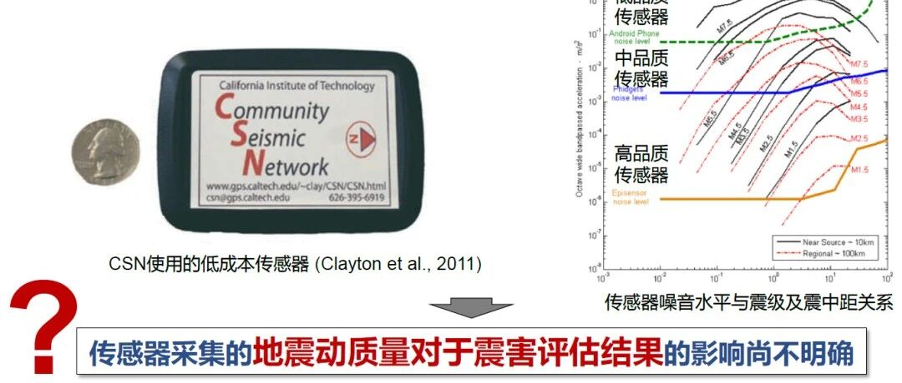

提升震害分析精度，更多数量 or 更高质量的加速度计? | 新论文：加速度计类型对地震动记录和震损评估的影响

论文：Influence of Accelerometer Type on Uncertainties in Recorded Ground Motions and Seismic Damage Assessment. Bulletin of Earthquake Engineering. 2022.
作者：廖文杰，费一凡，程庆乐，陆新征，等
3分钟视频介绍本文工作
01
研究背景

因此，我们与UCLA的E.T.教授课题组合作研究了不同质量传感器采集的强震记录对震害分析结果的影响。
02
研究方法
本研究采用了三步策略（当然不是打开冰箱门，把大象放进冰箱，关闭冰箱门这么简单的三个步骤）。首先是获得传感器采集的地震动记录，然后把不同传感器采集的地震动用于单体结构分析，再进一步应用于区域震害分析。

图1 分析方法
2.1 传感器采集地震动模拟
要获取不同质量的传感器在同一时间、同一地点采集到的同一条地震动，这个难度有亿点点大，所以我们优先采用传感器模拟和地震动模拟来开展本研究。传感器我们本次选用了三种，低品质、中品质、高品质加速度计（利益无关，也隐去传感器名称）。采用超算模拟的地震动时程场，即为Benchmark地震动（感谢文阳的地震动支持），采用MATLAB滤波函数进行传感器采集地震动模拟（感谢Farid的代码支持），然后再给地震动加上不同强度的高斯白噪声以简要的模拟不同传感器品质。

图2 传感器模拟地震动采集方法
典型的模拟传感器采集地震动结果如下图所示，不同传感器的性能差异较显著。

图3 不同品质传感器采集的典型振动对比
2.2 单体与区域震害分析
以传感器模拟的地震动作为输入，开展单体和区域震害分析。

图4 单体分析和区域分析方法

图5 单体建筑震损分析精度评价方法

图6 区域建筑震损分析精度评价方法
03
分析结果
本次分析采用的模拟地震动场如下图所示。

图7 Istanbul地区的模拟地震动场
3.1 传感器采集的地震动误差
基于模拟地震动，对地震动场的所有振动进行了采集和误差分析，结论比较明显：随着震中距增加，误差逐渐增加；传感器误差对比：低品质(失真) >> 中品质(中度) >> 高品质(精确)。

图8 传感器采集地震动的误差分析
3.2 单体和区域震害分析误差
单体结构分析结果如图所示，低品质传感器采集地震动对应的分析结果误差100%，中品质传感器5%左右，高品质传感器仅约0.1%左右。

图9 单体结构震害分析结果误差
区域分析结果如下图，与精确分析结果对比后，可以看到低品质传感器地震动分析结果中，1等级误差达到了25%，中品质传感器则在4%，高品质传感器则仅0.1%。

图10 区域震害分析结果误差
3.3 有限预算下的不同传感器布置方案对比
在完成了不同传感器对震害分析结果影响的对比后，我们在想，如果给定一个预算，那到底是多布置传感器还是买更高品质的传感器对于区域震害分析更有利呢？
我们开展了一个初步的分析，首先排除低品质传感器（前面研究表明该传感器目前不适用于震害分析），假设高品质传感器的价格是中品质价格的9倍，则对应高品质传感器数量是中品质的1/9，传感器则采用最简单的均布布置方法。
下面就是见证奇迹的时刻！

图11 高品质传感器布置方案及其对应的分析结果

图12 中品质传感器布置方案及其对应的分析结果
一句话总结，本研究中震损分析精度：传感器数量多 > 传感器质量高。当然，本研究采用了简单的假设和朴素的分析方法，在实际强震台网的布设中，需要考虑更多的因素。未来有待进一步的研究。
04
总结
本研究通过对地震动、传感器采集、以及震害分析的模拟，分析了不同传感器对震害分析结果的影响，希望能为强震台网的建设提供一些参考。主要收获在于初步表明了：对于区域尺度分析，更多的常规质量传感器优于较少的高质量传感器方案；而高质量传感器更适合于重点单体建筑。本研究属于初步探索，尚有很多不足，请各位读者指正，我们后续也将开展更深入的研究。
致谢
感谢加州大学洛杉矶分校（UCLA）Ertugrul Taciroglu教授的联合指导，以及其团队Dr. Farid Ghahari、Dr. Wenyang Zhang、Dr. Peng-Yu Chen，以及Assoc. Prof. Asli Kurtulus（Özyeğin University），田源（北京科技大学），陈旺（清华大学）在代码、数据和模型方面的支持。
联系方式
---End---
相关研究
特刊征稿
专著
人工智能与机器学习
城市灾害模拟与韧性城市
高性能结构与防倒塌
新论文：抗震&防连续倒塌：一种新型构造措施
长按识别二维码，关注我们的科研动态